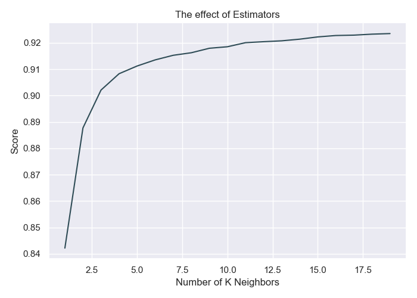
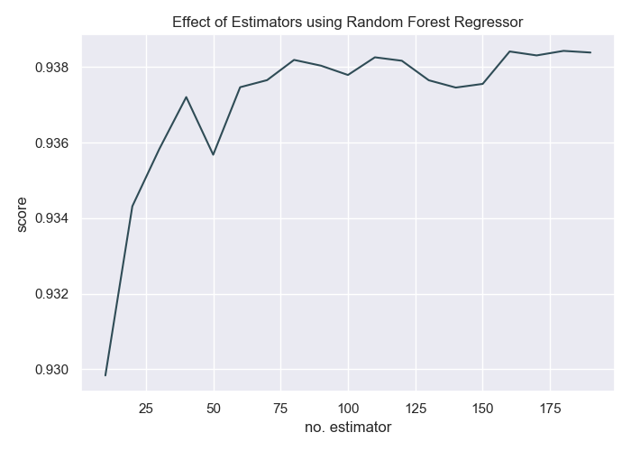

Accuracy using K-Nearest Neighbor: 92.22%
Number of Neighbors: 15
The k-nearest neighbors algorithm is based around the simple idea of predicting unknown values by matching them with the most similar known values. Building the model consists only of storing the training dataset. To make a prediction for a new data point, the algorithm finds the closest data points in the training dataset — its "nearest neighbors".
Accuracy using Random Forest Classifier: 88.1%
The RandomForestRegressor class of the sklearn.ensemble library is used to solve regression problems via random forest. The most important parameter of the RandomForestRegressor class is the n_estimators parameter. This parameter defines the number of trees in the random forest.
[(10, 0.9303202723106436), (20, 0.9356555618590428), (30, 0.9366130007940713), (40, 0.9373008859166636), (50, 0.9384592098639978), (60, 0.9376922378041562), (70, 0.9378804228830855), (80, 0.9382742065517078), (90, 0.9378996919921152), (100, 0.9384200487953672), (110, 0.937982724043652), (120, 0.9374650813497156), (130, 0.9377125664646933), (140, 0.9385578940014901), (150, 0.9378982046226296), (160, 0.9380323255624419), (170, 0.9380361743037164), (180, 0.9382368719438466), (190, 0.9381968635516788)]
Mean Absolute Error: 0.24174189162944282
Mean Squared Error: 0.1614253832629739
Root Mean Squared Error: 0.4017777784584084
